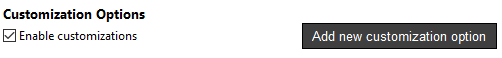
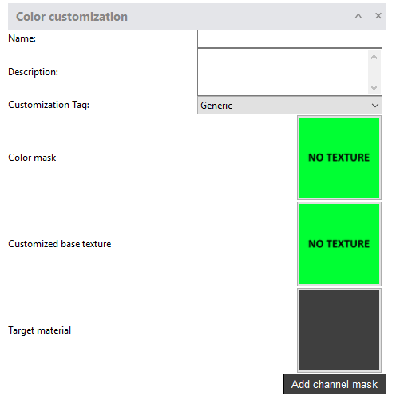
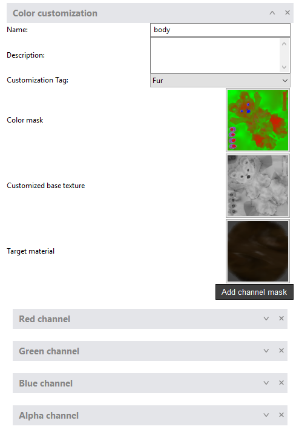
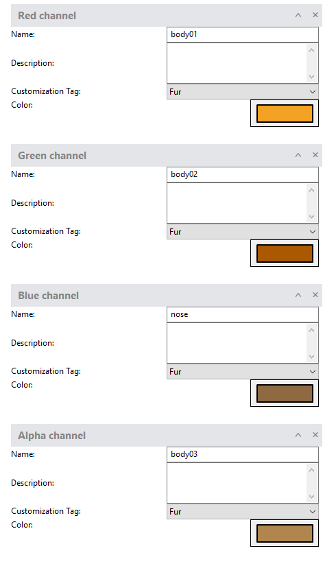
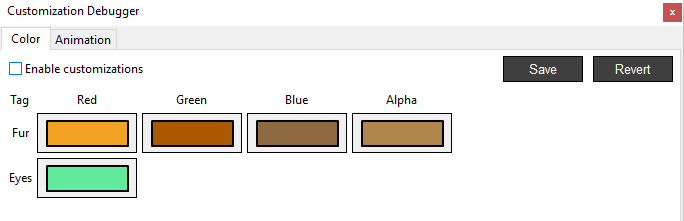
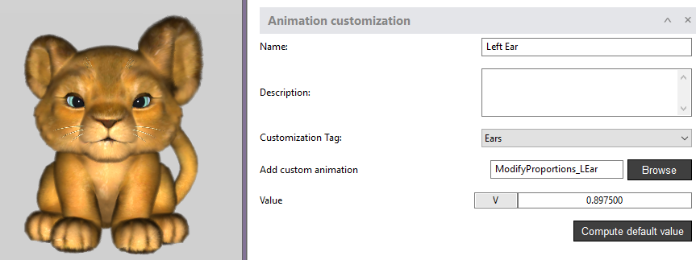

How can I add Customizations on an Avatar in the Animaze Editor?

1. Color customization
Requirements:
- Color mask
- Customized base texture
- Expand the customization window and start loading the required textures

- You can fill in a name, a description and add a designated tag as body part or clothing component.
For example, if the hair piece of your model is composed out of 3 meshes, you will have to add 3 color customizations using the same Tag, color mask textures, customized base textures and same values on the RGB Alpha channels when added.

- Add channel mask - the Color Mask uses the RGB & Alpha channels, which you can add in order to set the color in the regions you want
- areas you paint in black are hidden
- areas you paint in white are visible
- areas you paint in shades of gray appear in various levels of transparency.
- Set the colors for the channels in two ways:
- either by clicking on the color box in the channel, which will open up a color picker dialog box

- or by going to the Tools menu and choosing the Customization Debugger, which will also open a dialog box where you can set the colors as you wish

2. Animation customization
Requirements:
- Animation files in .fbx format
- Expand the customization window and fill in the name, description and add a designated tag
- Browse for the animation file you will use
- Set the value you want by clicking on the V box and sliding to left/right

- The Compute default value button finds the closest value of the idle animation; it calculates the middle value of the respective animation
- Save your changes before exiting the Editor